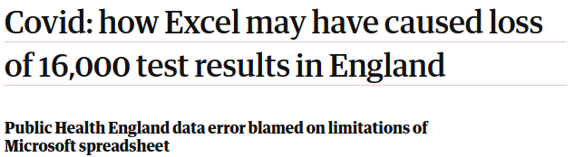
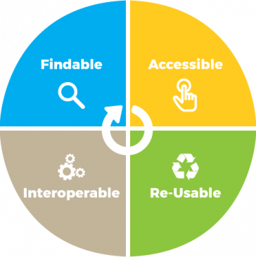
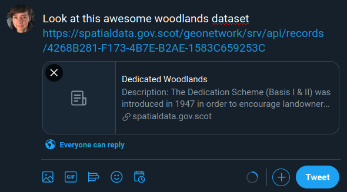
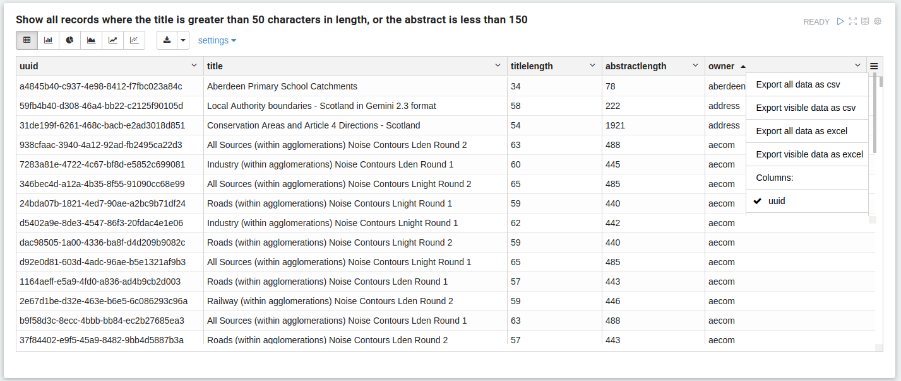
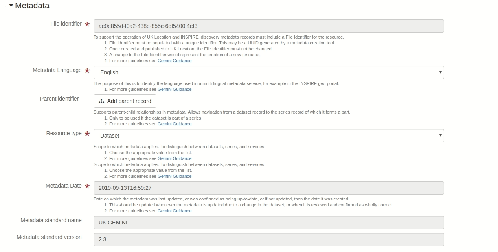
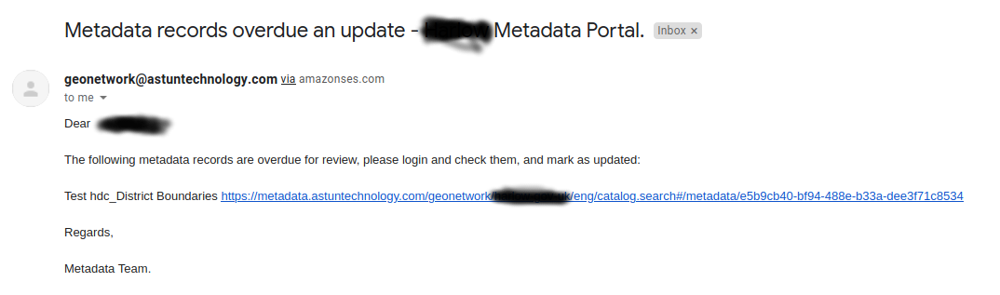

Discovering Metadata with Astun Technology
Presented by Jo Cook, and Eoghan Hennessy
We are Astun Technology, and we create world-class cloud-hosted geospatial solutions on open source foundations
Today we'll be talking about data discovery and metadata
Hi, I'm Jo
I'm the Data Discovery Lead at Astun Technology
Eoghan Hennessy is co-hosting
He's a Project Manager at Astun with responsibility for iShare in the Cloud and Metadata Enterprise Solutions
Some background
Astun Technology manage metadata catalogs for Scottish Government, the Environment Agency, DEFRA, and many regional authorities
We've also created the Gemini 2.3 Plugin for GeoNetwork, and have recently completed a series of enhancements around data discoverability for Scottish Government that we are able to pass on to all of our clients
What is metadata?
Metadata is a way of describing data, giving you the information you need to ensure it's fit for purpose.
It's generally stored using a common format, in a catalog, with persistent identifiers and links back to the source data, so it can be discovered and shared easily.
Debora Cartagena Pixnio, CC0But...
Metadata is often viewed as a legislative box-ticking exercise that is hard, costs time and money, and seems to have little direct benefit.*cough, INSPIRE, cough*
Times have changed!
The InternetWe've gone beyond creating data and metadata for internal use. Now, data is shared on corporate intranets, on public-facing portals, and in national data catalogs, and efficient use of data is crucial in solving many of today's crises...
Astun have enhanced and expanded our metadata offering to meet these new challenges, and to help you meet emerging best practice guidelines for data management, such as those issued by Government Digital Service (GDS)
Expanded product
We use GeoNetwork, the leading open source geospatial metadata catalog, as the core of our product. We've now added Metadata Crawler, also open source, based on Talend ETL for bulk metadata creation.
We've also expanded the functionality of GeoNetwork, which we'll talk more about shortly
Overview
Best Practice
Government Digital Services Best Practice Guides state that data should be Findable, Accessible, Interoperable, and Reusable (FAIR)
Findable
Searches start in search engines, not in portals, so we need to make sure our datasets are search-engine-optimised for both good rankings and well-displayed results
- We've added structured data into Gemini 2.3,
- Created reports showing records with data quality issues,
- Improved GeoNetwork SEO
#1 Record in GeoNetwork
#2 Structured Data
#3 Google Search
#4 Social Sharing
Data Quality Reports
For our iShare customers, we've made it easy to link layers in iShare Maps or GIS to metadata records so you can provide additional context for the data you display online
Accessible
Metadata solutions need to be easy to use, for creators and users, and it should be easy to access the required data
- We use Metadata Crawler to do the hard work of creating initial metadata records for all of your datasets so you don't have to do it manually,
- contribute to accessibility improvements in GeoNetwork,
- and have made the editor in Gemini 2.3 much easier to use
(Not metadata crawler, metadata crawler is a boring command-line tool)
gfycat.comGemini 2.3 editor improvements
In iShare GIS, you can search for metadata directly in the application, helping you identify and display the data you need, quickly and easily
Metadata in iShare GIS

Interoperable
Metadata and data need to be in a format that other people or machines can consume
- We've implemented support for non-spatial metadata,
- support for feature catalogs (ISO19110),
- and have a tool for converting online vocabularies into a format GeoNetwork can use for keywords
Non-Spatial Metadata
Feature Catalog
In iShare, records can have a direct reference back to the Spatial Data Warehouse, and the iShare View and Download Service URLs, linking everything together in a way that's easy to maintain
Links back to iShare
Reusable
Data should be in formats that can be shared, with quality metadata to ensure it is signed off for publication, used correctly, and is fit for purpose
- We can check that links to View and Download services are working correctly,
- can send automated reminders when datasets are due or overdue an update
- and are working on snippets to allow you to indicate data is fit for release
Link Checker
Overdue Reminders
For our all users, including iShare, we can provide separate public and private catalog endpoints, giving a clear separation between metadata they wish to make publicly available, and that which should be accessible only within their organisation.
Public and Private endpoints
All of this can be deployed quickly and easily on our resilient cloud infrastructure, whether you're an iShare customer or not, and whether you have existing metadata or not!
Those FAIR Principles Again
- make it FINDABLE with structured data and GeoNetwork improvements,
- make it ACCESSIBLE with Metadata Crawler and Gemini 2.3 editor enhancements,
- make it INTEROPERABLE with non-spatial and feature catalogs,
- make it REUSABLE by ensuring links to data are correct and sending update reminders
Thank You!
Any questions?
Contact sales@astuntechnology.com for more details

Discovering Metadata with Astun Technology